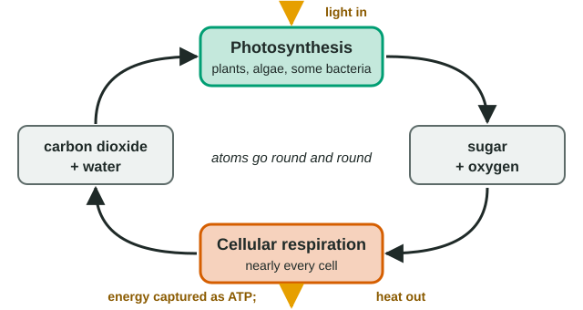
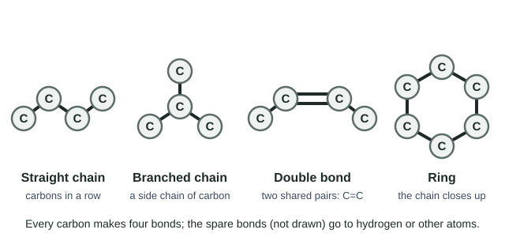

Every molecule in your body was built from atoms that came from somewhere else: the air, water, food. This page explains which kinds of atoms living things need, what each is used for, and why carbon is at the center of it all.
Elements and isotopes
An element is a pure substance made of only one kind of atom. Carbon, oxygen and gold are elements. What makes an atom one element rather than another is its number of protons: every carbon atom has 6, every oxygen atom 8.
Atoms of the same element can have different numbers of neutrons. These versions are isotopes. Most carbon is carbon-12 (6 protons, 6 neutrons), but a little is carbon-13 (7 neutrons) or carbon-14 (8 neutrons). Some isotopes are unstable and give off radiation as they break down: these are radioactive isotopes, such as carbon-14, phosphorus-32 and sulfur-35.
Isotopes of one element behave almost identically in chemistry, because chemistry depends on electrons, and the number of electrons matches the number of protons. That makes isotopes perfect tracers: feed a cell phosphorus-32 and the cell uses it exactly like ordinary phosphorus, but you can detect where the radioactive atoms end up.
Matter cycles; atoms are not made new
Organisms grow by building new molecules, and they cannot make atoms. Every atom they use is taken in from the environment and, sooner or later, returned to it. Two processes move carbon, hydrogen and oxygen around this loop (Figure 1):
- Photosynthesis: plants, algae and some bacteria use the energy of light to build sugar from carbon dioxide and water, releasing oxygen.
- Cellular respiration: nearly every cell, plant cells included, breaks sugar down with oxygen, releasing carbon dioxide and water and capturing energy in ATP.

This is why the carbon atoms in a sugar molecule in your muscles were, not long ago, in the carbon dioxide of the air. A plant pulled them out by photosynthesis, you (or an animal you ate) took them in as food, and your cells will breathe many of them back out. Matter is recycled; energy is not. Energy enters as light, is stored for a while in chemical bonds, and eventually leaves as heat.
Worked example: reading a formula. A six-carbon sugar has the formula C6H12O6. How many atoms of each element does one molecule hold, and which elements must a plant take in to build it?
6 carbon, 12 hydrogen and 6 oxygen atoms: 24 atoms in all. A plant gets the carbon from carbon dioxide and the hydrogen from water; the oxygen comes from carbon dioxide. No nitrogen, phosphorus or sulfur is needed, which is why a plant short of those can still make sugar but cannot grow normally.
The elements of life: CHONPS
About 25 elements are found in living things, but six make up roughly 98% of the mass of a cell: carbon (C), hydrogen (H), oxygen (O), nitrogen (N), phosphorus (P) and sulfur (S). By mass, a human body is about 65% oxygen, 18% carbon, 10% hydrogen, 3% nitrogen, 1% phosphorus and 0.3% sulfur (much of the oxygen and hydrogen is in water). Small amounts of others, such as calcium, potassium and iron, matter too.
| Element | Found in | Taken in as (examples) |
|---|---|---|
| Carbon (C) | Every organic molecule: the skeleton | Carbon dioxide (plants); food (animals) |
| Hydrogen (H), oxygen (O) | Nearly every biological molecule; water | Water, carbon dioxide, food |
| Nitrogen (N) | Proteins (every amino acid), nucleic acids | Nitrogen salts from soil (plants); protein in food (animals) |
| Phosphorus (P) | Nucleic acids, ATP, some lipids | Phosphate from soil and water; food |
| Sulfur (S) | Some amino acids, so many proteins | Sulfur salts from soil; food |
Four families of biological molecules (a first look)
Most of the molecules in a cell belong to four families. The next topics teach each in detail; for now, know what they are made of.
- Carbohydrates: sugars and the larger molecules built from them. Made of C, H and O, often with twice as many hydrogen atoms as carbon or oxygen atoms.
- Lipids: fats, oils and related molecules. Mostly C and H, with a little O; they are hydrophobic.
- Proteins: chains of amino acids, the building blocks of proteins. Every amino acid contains C, H, O and N; a few also contain S.
- Nucleic acids: DNA and its relatives, which store and use the information in genes. They contain C, H, O, N and P.
One more molecule needs a name now: ATP (adenosine triphosphate) is the molecule cells use to carry energy from where it is released to where it is used. It contains a chain of three phosphate groups, so it needs phosphorus too.
Carbon: the backbone of life
Molecules built on carbon are called organic molecules; most other small molecules, such as water, carbon dioxide and salts, are inorganic. Carbon is special because each carbon atom forms four covalent bonds. It can bond to up to four other atoms, including other carbons, so carbon atoms link into long chains, branched chains and rings, and can share two pairs of electrons in a double bond (Figure 2). This framework of carbon atoms is the molecule's carbon skeleton.

A molecule made only of carbon and hydrogen is a hydrocarbon, like the hexane and wax you met in the water topic. C–H bonds are nonpolar, so hydrocarbons are hydrophobic. When hydrocarbons burn (react with oxygen), they release a lot of energy as their atoms end up in the stronger bonds of carbon dioxide and water, which is why fuels such as gasoline are hydrocarbons.
The same atoms can be arranged in different ways. Isomers are molecules with the same formula but different structures. Two sugars can both be C6H12O6 yet have their atoms bonded in different orders, giving different shapes and different properties (one tastes much sweeter than the other). In biology, shape decides what a molecule can do.
Functional groups
A carbon skeleton on its own is just a hydrocarbon. What makes biological molecules react and dissolve differently is the small clusters of atoms attached to the skeleton: functional groups. Each group behaves about the same whichever molecule it is on.
| Group | Formula | Behavior | Found in |
|---|---|---|---|
| Hydroxyl | –OH | Polar; hydrogen-bonds with water, so it makes molecules more soluble | Sugars, alcohols |
| Carbonyl | C=O | Polar | Sugars |
| Carboxyl | –COOH | Acid: releases H+, becoming –COO− | Amino acids, some lipids |
| Amino | –NH2 | Base: picks up H+, becoming –NH3+ | Amino acids |
| Phosphate | –OPO32− | Acidic and negatively charged | Nucleic acids, ATP |
| Sulfhydryl | –SH | Two –SH groups can bond to each other, linking parts of a protein | The amino acid cysteine |
| Methyl | –CH3 | Nonpolar | Many molecules; can change how DNA is read |
Worked example: spot the groups. The amino acid cysteine is HS–CH2–CH(NH2)–COOH. Which functional groups does it carry, and which elements does a cell need to make it?
Reading left to right: a sulfhydryl group (–SH), an amino group (–NH2) and a carboxyl group (–COOH) on a three-carbon skeleton. Its elements are C, H, O, N and S, so a cell short of sulfur cannot make cysteine or the proteins that contain it.